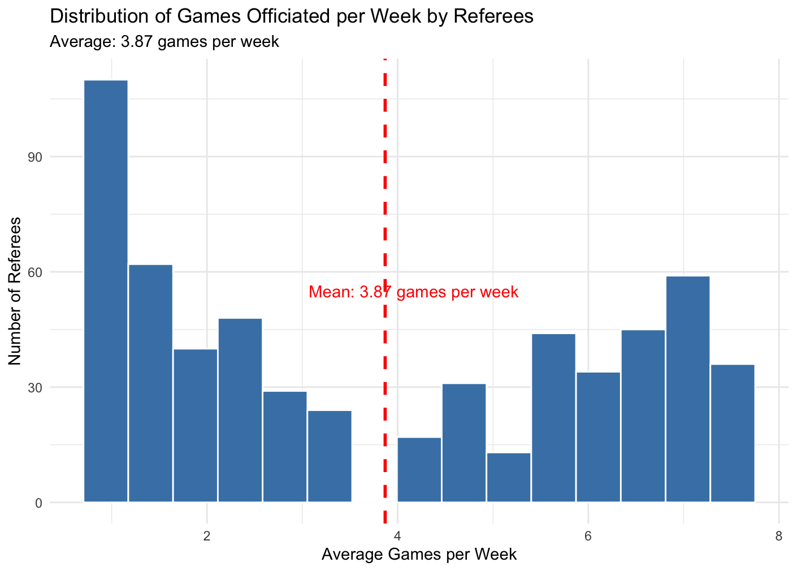

NCAA Referee Dashboard
Exploring Referee Travel and Workload in Division I Men's Basketball
Project Goal: Explore whether referee travel distance influences officiating behavior during NCAA Division I Men's Basketball games.
Tech Stack: Python (requests, beautifulsoup, geopy), R (tidyverse, ggplot2, plotly), R Shiny
From Problem Framing to Data Product
In college basketball, high-stakes games demand fairness. But what if unseen factors influence outcomes? This project began with a simple question: Does referee travel distance affect officiating behavior? Before answering that, I had to build the data infrastructure from the ground up.
Laying the Data Foundation
Unlike modern APIs, stats.ncaa.org is a static HTML site with no structured access points. Every game, box score, and referee assignment is embedded in hard-to-navigate pages. The breakthrough came from discovering that each game had a unique ID buried in the URL. This became the anchor for scraping a full season's worth of data.
Using custom Python scripts, I automated the collection of game IDs by date and extracted structured details for each matchup. This included team stats, locations, and referee crews. The final dataset consolidated 5,922 games across the 2024–25 season with 34 structured columns and over 770 referees.
Estimating Referee Travel
To measure travel, I geocoded venue names into latitude and longitude coordinates using Nominatim (OpenStreetMap). I then calculated straight-line distances between each official's assignments across the season. This helped reconstruct a proxy travel itinerary for every referee.
- Referees tracked: 778
- Top traveler: Keith Kimble officiated 90 games, traveling an estimated 47,459 miles
- Average trip: Exceeded 500 miles for top referees
- Coverage: Games across 29 states
Building the Interactive Dashboard
To make the data actionable, I developed an R Shiny dashboard to visualize referee workload and travel behavior. It provides real-time exploration of referee patterns and flags outliers in assignment strategy.
Key Features
Overview Tab
- Summarizes national referee coverage, cumulative travel, and total games officiated
- Visualizes venue diversity and workload patterns with interactive plots
- Helps identify high-mileage officials and unusual scheduling patterns

Referee Rankings Tab
- Ranks referees by travel distance, game count, and venue diversity
- Supports fairness reviews and operations planning
- Tables can be filtered and exported for team use
Individual Referee Tab
- Breaks down each referee's travel profile across the season
- Highlights average, shortest, and longest trips
- Visual timeline helps identify rest periods and fatigue risks
Limitations and Design Choices
- Distances are approximated using great-circle formulas, not actual routes
- No driving, flight, or transportation APIs were used
- Travel behavior is assumed uniform across referees
- No statistical link was found between travel distance and foul calls
- The dashboard is designed for monitoring workload, not judging referee performance
Behind the Scenes: Distance Calculation
A custom Python class was developed to:
- Geocode venues using Nominatim with caching
- Extract referee assignments per game
- Calculate travel metrics (total miles, average trip, unique venues)
- Output a clean, referee-level dataset for dashboard integration